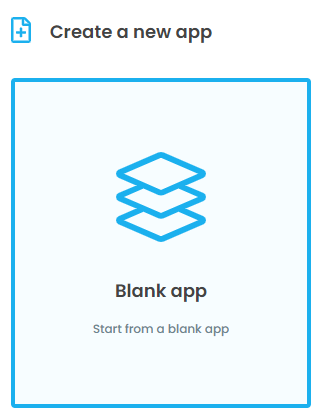
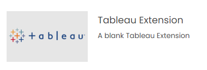

Getting Started
Let’s build a simple extension that displays the summary data from Tableau within Anvil when a user clicks a bar in a bar chart.
First create a new extension in Anvil by selecting “Blank app” and then “Tableau Extension”:
 {kind=link}
{kind=link}
Rename
Form1toMainFormAdd a label to the UI and change its python name to
label_1Paste the following in the code section of the initial Anvil form
1 # client_code/MainForm/__init__.py
2 from ._anvil_designer import MainFormTemplate
3 from anvil import *
4 from tableau_extension.api import get_dashboard
5
6 class MainForm(MainFormTemplate):
7 def __init__(self, **properties):
8 self.init_components(**properties)
9 self.dashboard = get_dashboard()
10 self.dashboard.register_event_handler('selection_changed', self.show_selections)
11
12 def show_selections(self, event):
13 self.label_1.text = str(event.worksheet.selected_records)
In the form code above, we do 2 important things:
Get the current Tableau dashboard using
get_dashboard.get_dashboardreturns aDashboardobject and contains many useful attributes and methods such as datasources, filters, parameters, and worksheets.Bind the
show_selectionsmethod of our Anvil form to theselection_changedevent of the Tableau dashboard usingregister_event_handler. Theselection_changedevent is triggered from Tableau whenever the user selects / unselects marks, and every time this event is triggered theshow_selectionsmethod is executed.
Once you’ve added that code to the Form, we’ll need to connect the extension to our dashboard with a .trex file. A .trex file is a single configuration file we drop into our dashboard to connect the extension. To do this:
First, in Anvil:
Click the green “Test in Tableau” button in the top right.
A popup will appear, click “Click here to download the manifest file for your extension”. The trex file should appear in your downloads.
Then, in Tableau:
Go to the dashboard, drag and drop the “Extension” object wherever you’d like.
In the bottom left of the alert that appears, select “Access Local Extensions” and locate the
.trexfile from step 2.
Congrats, you now have a working Tableau extension!
Click here to clone the Anvil App
And here for the Tableau workbook